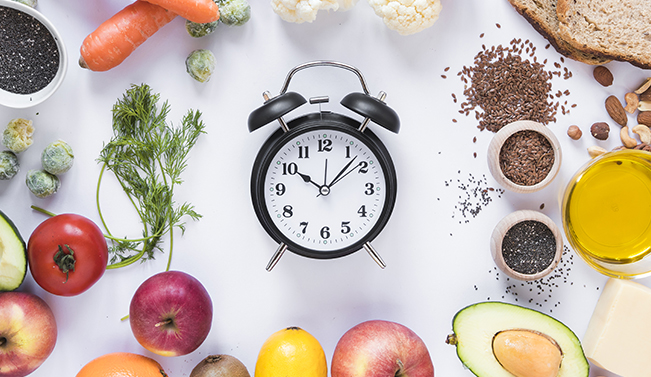
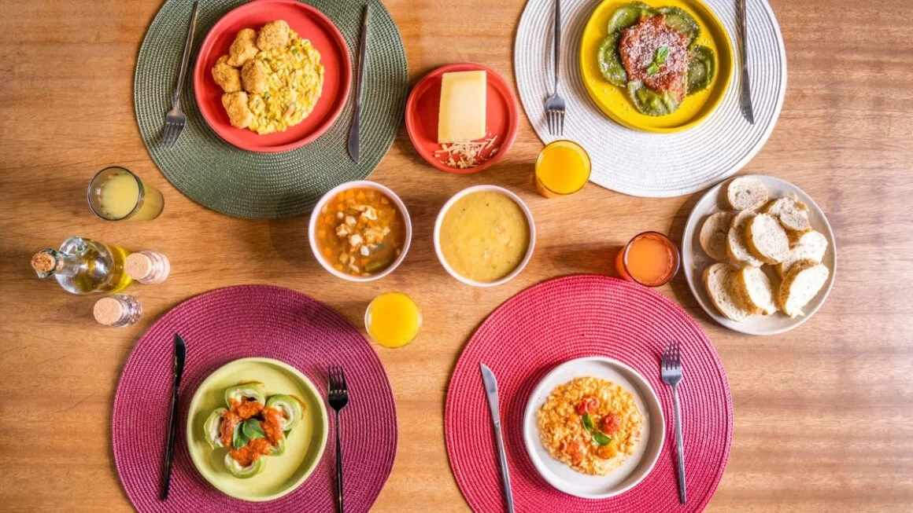

DICAS PARA MANTER UMA ROTINA SAUDÁVEL DE FORMA PRÁTICA
Você consegue pensar em restaurantes com opções veganas no cardápio que sejam equilibradas nutricionalmente e, ainda por cima, bonitas e saborosas? Esse costumava ser um diferencial para atender um público restrito e virou necessidade com a popularidade de dietas plant baseda, aquelas que usam os vegetais como base.
Seja pelo cuidado com a saúde, pelo interesse no valor nutricional ou pela busca de experiências através de novos sabores, restaurantes e empresas que trabalham com boas opções veganas e vegetarianas fazem parte de um mercado em plena ascensão e com muitas oportunidades.
A pesquisa “O consumidor Brasileiro e o Mercado Plant-Based”, realizada em 2020 e atualizada em 2022 pela The Good Food Institute Brasil (GFT Brasil), constatou que 67% da população do país reduziu seu consumo de carne nos últimos 12 meses. Além disso, junto com os vegetarianos e veganos, outro grupo se destacou no consumo de preparações à base de vegetais: os flexitarianos. Você sabe o que quer dizer cada um desses termos? Se você tem dúvidas, temos uma publicação aqui no blog que conta os tipos de dietas plant based mais comuns. Clique no link para ler e entender a diferença entre vegetarianos, veganos ou flexitarianos.